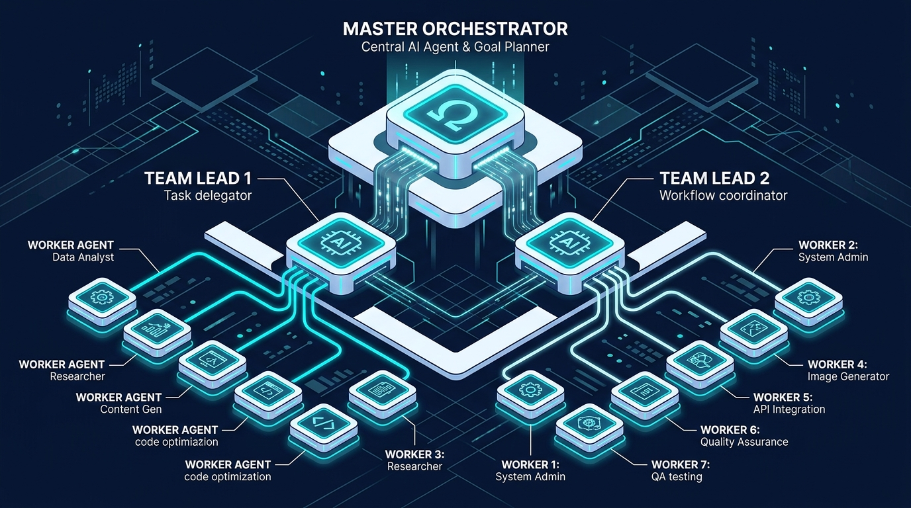
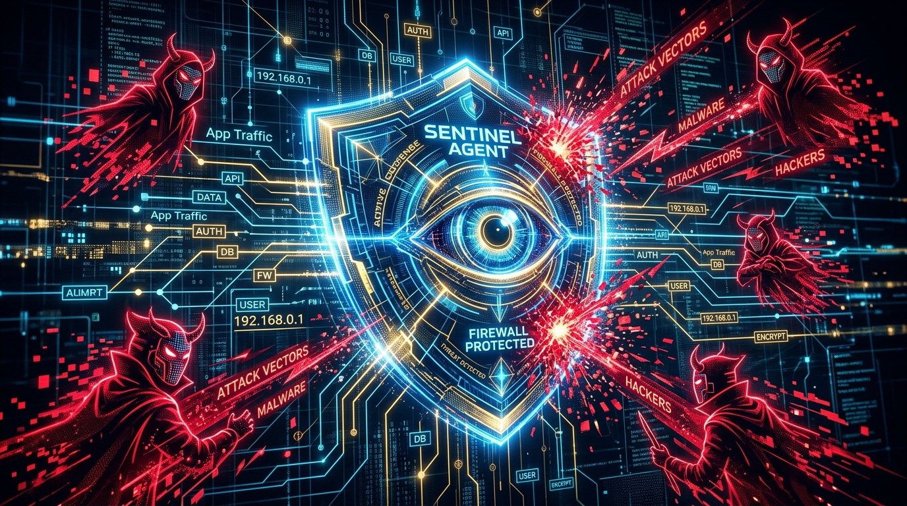

The tech world is buzzing with the news that Claude Code—the product that reportedly scaled from zero to a billion-dollar run rate in record time—has leaked. While most commentators are fixated on the 'Mythos' model or the spicy hot takes surrounding Anthropic’s rise, senior engineers are looking for a different signal.
The true revelation of the Claude Code leak isn't about the underlying Large Language Model (LLM); it is about the infrastructure that drives it. We are entering the era of the 'Agent Harness.'
For the modern engineer, the model is becoming a commodity, while the harness—the deterministic code, token caching, orchestration layers, and skill sets surrounding the model—is becoming the primary source of leverage. This shift marks the end of 'vibe coding'—unstructured, heuristic-based prompting where developers rely on trial-and-error—and the beginning of agentic engineering. By mastering harness engineering, you stop solving one-off tasks and start building systems that solve entire classes of problems. The leak confirms what many of us have suspected: the harness is the product, the moat, and the ultimate multiplier for engineering impact in 2025 and beyond.


The Agent Harness:
The Real
Product Behind the Leak
The Claude Code leak tells us one thing above all else: if the harness is worth billions in ARR, then the harness is the actual product. Most engineers focus on the intelligence of the model, but without a robust harness, an agent is just a chatbot.
A professional-grade harness provides everything required to drive agentic results: deterministic execution, efficient token caching, sophisticated orchestration, and precise model control.
While Anthropic pioneered the category, the lesson for engineers is that you can build specialized harnesses for your specific domain. Whether you are using PydanticAI, LangGraph, or custom-built frameworks, the goal is to capture value by creating a system that manages the model's unpredictability.
As models continue to be commoditized, the ability to engineer a harness that produces reliable, production-ready code is the most valuable skill an agentic engineer can possess.
From Vibe Coding to
Agentic Engineering
A Three-Tier Architecture.
To scale your impact, you must move beyond the single-agent instance. The leak validates a specific structural truth: high-performance agents require a rigid hierarchy to manage complexity.
Transitioning from simple prompts to a three-tier architecture—comprising Orchestrators, Leads, and Workers—is the key to horizontal scaling. In this system, the Orchestrator acts as the primary interface, managing high-level goals and delegating to Team Leads. The Leads, in turn, manage specialized Workers.
Crucially, the Orchestrator and Leads do not do the 'grunt work'; they are thinkers, planners, and managers. They are taught to prompt-engineer on your behalf, ensuring that the input to the system does not scale linearly with the number of agents. This structure allows for parallel execution and 'till-done' workflows, which are iterative loops governed by automated validation criteria that ensure a task is complete before moving on.
{
"orchestrator": "LeadArchitectAgent",
"teams": [
{
"name": "UI_Generation_Team",
"lead": "FrontendLeadAgent",
"workers": [
"ViewGenerator",
"AnimationSpecialist",
"BrandAnalyst"
]
},
{
"name": "Security_Audit_Team",
"lead": "SentinelLeadAgent",
"workers": [
"VulnerabilityScanner",
"LogicValidator"
]
}
]
}Agent Experts
and the
Evolution of Mental Models
One of the most advanced concepts in harness engineering is the use of 'Agent Experts' that maintain their own mental models. Instead of spinning up agents with blank memories for every task, we are now building systems where agents track their own expertise through persistent state management and decentralized knowledge bases.
These expertise layers allow agents to document their understanding of the codebase, track design decisions, and learn from past mistakes. When an agent boots up, it 'hot-loads' its mental model, giving it immediate context that exceeds the limitations of a standard system prompt. This creates an agent that learns over time, operating your specific domain better than a general-purpose tool ever could. By giving agents the skill to manage their own documentation, you reduce the 'context tax' and increase the trust you can place in their autonomous decisions.

Agentic Security
&
Business Opportunity
As we build more autonomous systems, the combination of agents and security is becoming a critical theme. The rise of 'black-hat' agents—LLMs prompted to exploit vulnerabilities—means that manual security audits are no longer sufficient. This creates a massive opportunity for 'Agentic Security.'
Engineers should be looking to build security command centers where 'Sentinel' agents monitor logs in real-time, detect anomalies, and flag threats. This isn't just about cron jobs; it is about agents that understand the intent behind application traffic. For the agentic engineer, this is a multi-billion dollar business opportunity. Companies will pay a premium for a specialized agent harness that can defend their infrastructure against automated attacks while they sleep.
Using General Tools as Meta-Builders
A common mistake is thinking you have to choose between general tools like Claude Code and custom-built harnesses. In reality, the most effective workflow uses general-purpose agents as 'meta-builders.' You should use tools like Claude Code or Cursor to build the specialized systems that eventually replace them for specific domain tasks. About 80% of your time might be spent in a general agent environment, but that time should be focused on 'building the system that builds the system.' By templating your engineering expertise into reusable prompts, skills, and harness configurations, you ensure that your agents can execute like you do, but at a scale you could never achieve manually.
Conclusion
Scale Your Compute,
Scale Your Impact
The Claude Code leak is a wake-up call for the engineering community. It proves that the future of
software development isn't just about better models; it's about better systems. By moving from vibe
coding to harness engineering, adopting hierarchical multi-agent architectures, and focusing on
agentic security, you can stay at the forefront of this technological shift.
The goal for 2026 is clear: increase the trust you have in your agents to the point where they can
operate your products end-to-end. Stop prompting for one-off fixes and start engineering the
harnesses that will define the next decade of software. The signal is loud and clear—it's time to
scale your compute to scale your impact.